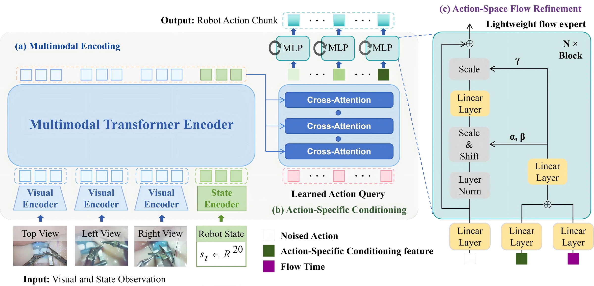
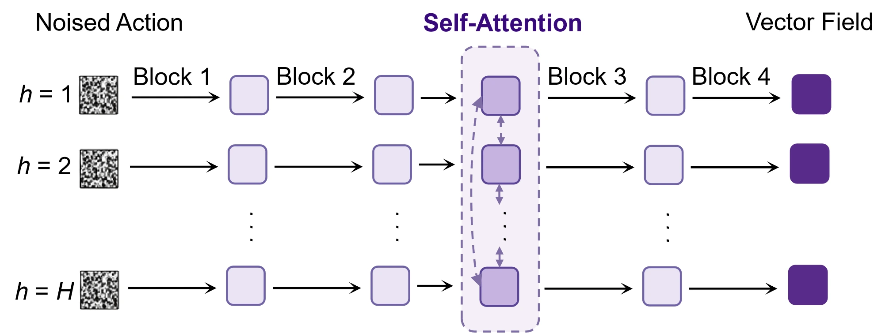
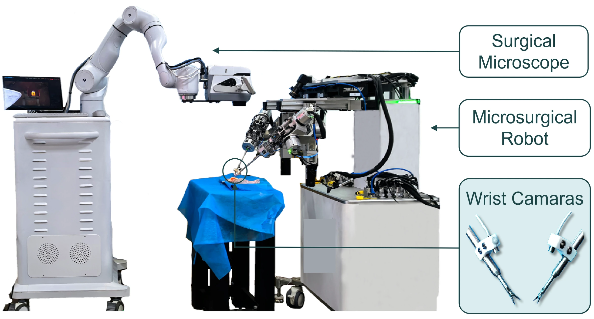
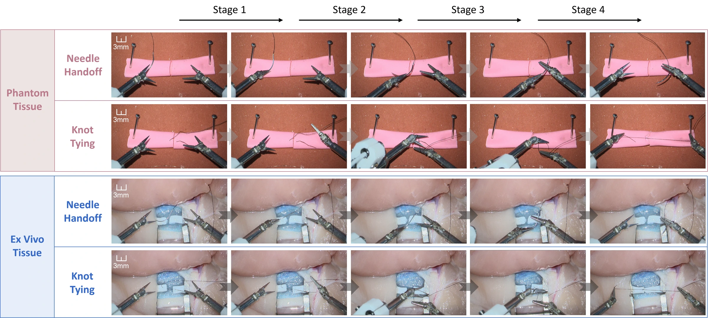
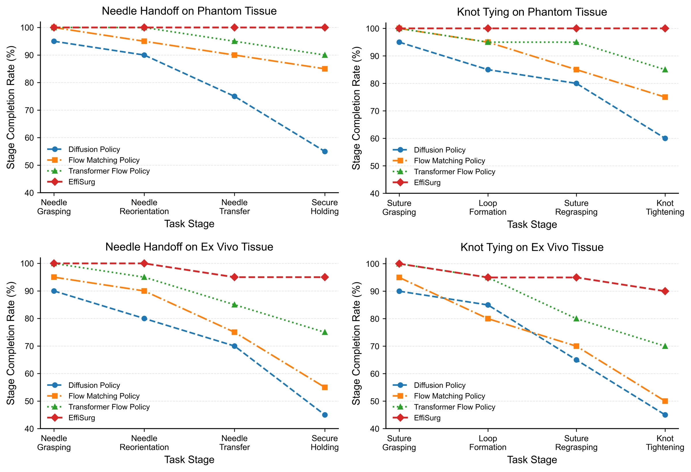
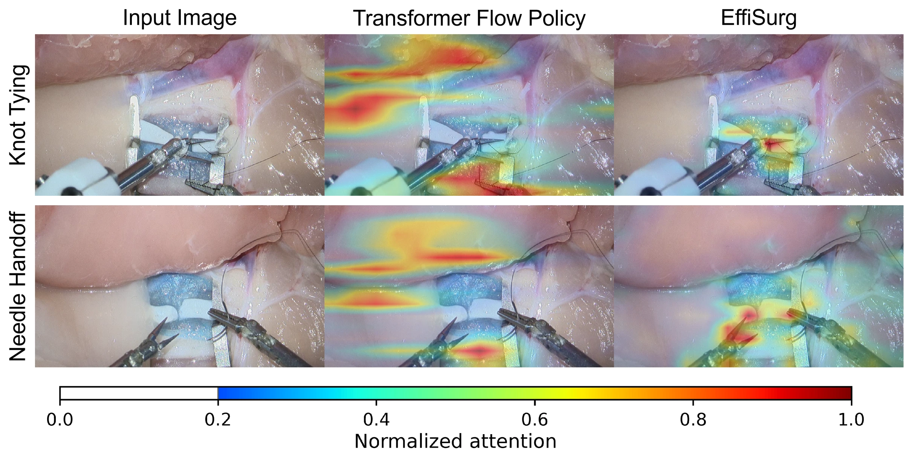
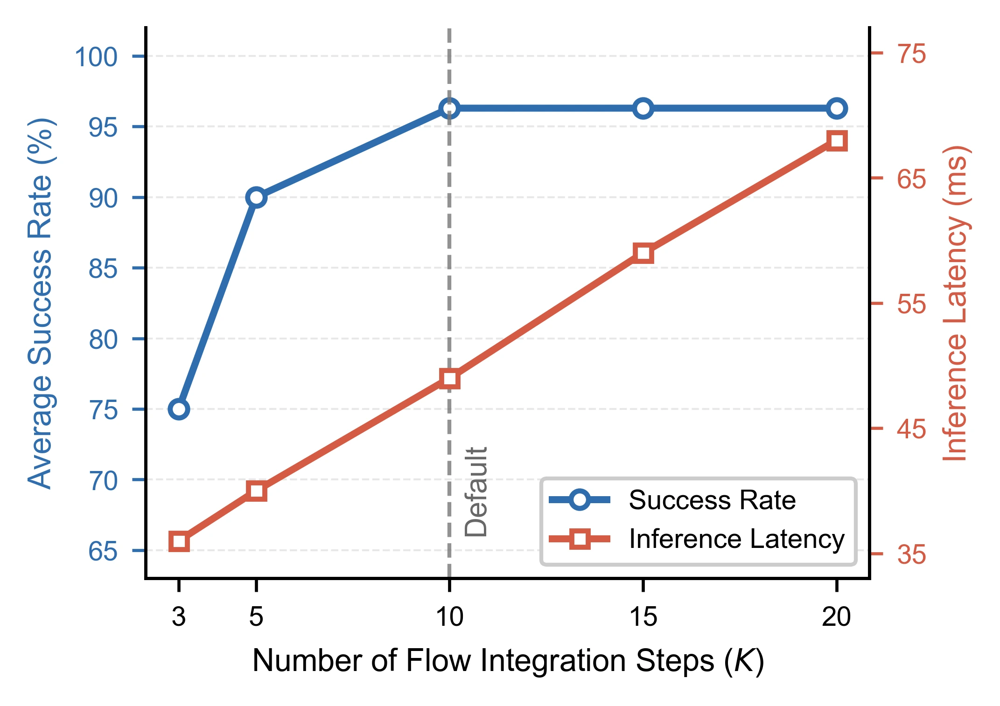

01 / THE IDEA
Less computation.
More precise action.
EffiSurg separates multimodal understanding from iterative action generation, enabling efficient closed-loop manipulation in a microscope-scale workspace.
96.3%
Average task success
49ms
End-to-end policy inference
67%
Lower inference latency†
† Compared with Transformer Flow Policy (147 ms). Evaluated across four tasks, with 20 trials per task. Results from the supplied manuscript.
02 / ABSTRACT
Efficient generation for
delicate manipulation.
Generative action policies based on diffusion or flow matching offer a promising approach to autonomous microsurgical manipulation, but their iterative generation incurs substantial inference overhead. EffiSurg is an efficient flow-matching policy that decouples multimodal grounding from iterative action refinement.
It extracts action-specific conditioning features from multimodal representations once per predicted action chunk. Conditioned on these features, a lightweight flow expert iteratively refines actions without repeated interaction with the full multimodal representations.
Evaluated on a bimanual microsurgical robotic system across needle handoff and knot tying in phantom and ex vivo settings, EffiSurg reduces end-to-end policy inference latency by 67% to 49 ms while increasing average task success by 16.3 percentage points to 96.3% relative to the coupled Transformer-based baseline.

03 / METHOD
Ground once.
Refine in action space.
Multimodal grounding runs once per action chunk. Compact, action-specific features then guide every step of a lightweight flow expert.

01
Multimodal encoding
A frozen DINOv3 visual encoder processes three camera views. A multimodal Transformer fuses visual features with the robot’s proprioceptive state.
02
Action-specific grounding
Learned action queries extract one conditioning feature for each future action. These features are computed once and reused throughout generation.
03
Lightweight refinement
Four condition-modulated MLP blocks and an intermediate self-attention layer predict the vector field over a coordinated action chunk.

04 / PLATFORM & TASKS
Two hands. Three views.
Four surgical tasks.
A custom bimanual microsurgical robot combines a surgical microscope, two wrist cameras, and synchronized proprioception. Approximately 600 teleoperated demonstrations cover two skills in two environments.

Needle handoff
Grasp, reorient, transfer, and securely hold a surgical needle through precise coordination between two instruments.
Knot tying
Grasp the suture, form a loop, regrasp, and tighten the knot while adapting to the changing shape of a deformable suture.

05 / SEE IT IN ACTION
Under the microscope.
24 VIDEOS · 3 VIEWSExplore representative rollouts of EffiSurg and Transformer Flow Policy. Select a task and a camera view to compare both methods side by side.
Transformer Flow Policy
147 ms / inferenceNeedle handoff on phantom tissue · Microscope view
Success counts summarize all 20 evaluation trials per task, not the individual clips. “Play both” starts the independent recordings together; trial durations may differ. Playback speed is relative to the supplied videos.
06 / RESULTS
Higher success.
A third of the latency.
EffiSurg improves average task success from 80.0% to 96.3% while reducing inference latency from 147 ms to 49 ms, with the same 10 flow-integration steps as the Transformer baseline.
Average success rate HIGHER IS BETTER
Policy inference latency LOWER IS BETTER
| Method | Phantom tissue | Ex vivo tissue | Average success ↑ | Latency ↓ | ||
|---|---|---|---|---|---|---|
| Handoff | Knot tying | Handoff | Knot tying | |||
| Diffusion Policy | 11/20 | 12/20 | 9/20 | 9/20 | 51.3% | 109 ms |
| Flow Matching Policy | 17/20 | 15/20 | 11/20 | 10/20 | 66.3% | 108 ms |
| Transformer Flow Policy | 18/20 | 17/20 | 15/20 | 14/20 | 80.0% | 147 ms |
| EffiSurg (ours) | 20/20 | 20/20 | 19/20 | 18/20 | 96.3% | 49 ms |
All methods use 10 iterative refinement steps and the same computing hardware. Average success is the arithmetic mean across four tasks, rounded as reported in the manuscript.

07 / A CLOSER LOOK
What makes the
difference?
Focused visual guidance
In the illustrated examples, EffiSurg concentrates attention around instrument tips and nearby needle or suture interactions. The coupled baseline shows a more dispersed distribution. This qualitative analysis suggests a possible explanation for the performance improvement.

Small components, meaningful gains
Action-specific conditioning and intermediate self-attention improve task performance with a modest latency overhead.
| Configuration | Average success ↑ | Latency ↓ |
|---|---|---|
| Shared conditioning | 82.5% | 46 ms |
| Without self-attention | 72.5% | 45 ms |
| EffiSurg | 96.3% | 49 ms |
Preserving multi-step generation
Increasing the number of flow-integration steps improves success but increases inference time. Performance begins to saturate around K = 10, the default configuration.
EffiSurg’s efficiency comes from reducing computation within each refinement step.

08 / READ THE RESEARCH
Explore EffiSurg.
Autonomous Microsurgical Robotic Manipulation
via Efficient Flow Matching